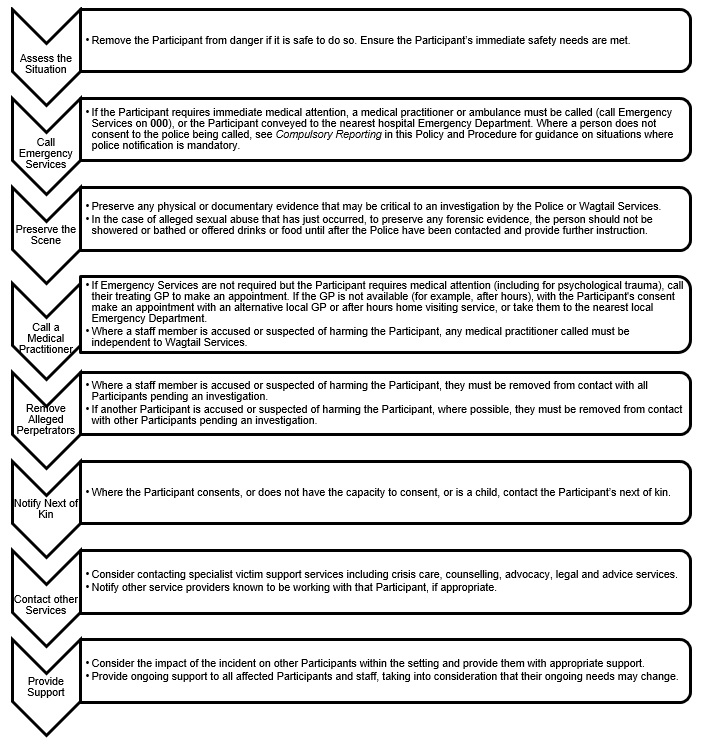

Purpose and Scope
This policy and procedure sets out Wagtail Services’ system for identifying, responding to, managing and resolving incidents that happen in connection with providing supports or services to people with disability (including children).
It applies to all Wagtail Services staff and meets relevant legislation, regulations and Standards as set out in Schedule 1, Legislative References.
Incidents involving staff or other stakeholders should be dealt with in accordance with Wagtail Services’ Workplace Incident Management Policy and Procedure.
Wagtail Services has additional obligations if an incident is the subject of a complaint (see the Feedback and Complaints Policy and Procedure).
Failure to comply with the incident management requirements of the NDIS legislation and rules may lead to the NDIS Commissioner taking compliance and enforcement action against Wagtail Services.
Applicable NDIS Practice Standards
Violence, Abuse, Neglect, Exploitation and Discrimination
Outcome Each Participant accesses supports free from violence, abuse, neglect, exploitation or discrimination.
Indicators
- Each Participant is provided with information about the use of an advocate (including an independent advocate) and access to an advocate is facilitated where allegations of violence, abuse, neglect, exploitation or discrimination have been made.
- Allegations and incidents of violence, abuse, neglect, exploitation or discrimination, are acted upon, each Participant affected is supported and assisted, records are made of any details and outcomes of reviews and investigations (where applicable) and action is taken to prevent similar incidents occurring again.
Incident Management
Outcome Each Participant is safeguarded by the provider’s incident management system, ensuring that incidents are acknowledged, responded to, well-managed and learned from.
Indicators
- An incident management system is maintained that is relevant and proportionate to the scope and complexity of supports delivered and the size and scale of the organisation. The system complies with the requirements under the National Disability Insurance Scheme (Incident Management and Reportable Incidents) Rules 2018.
- Each Participant is provided with information on incident management, including how incidents involving the Participant have been managed.
- Demonstrated continuous improvement in incident management by regular review of incident management policies and procedures, review of the causes, handling and outcomes of incidents, seeking of Participant and worker views, and incorporation of feedback throughout the provider’s organisation.
- All workers are aware of, trained in, and comply with the required procedures in relation to incident management
Definitions
Abuse (in the context of this policy) – verbal, physical and/or emotional mistreatment and/or lack of care of a person. Abuse can include bullying, child abuse, physical abuse, sexual abuse, emotional and psychological abuse, racial, cultural and religious abuse and domestic violence.
Financial abuse - any act which involves misusing the money or property of a person with disability without their full knowledge and consent. This includes theft of money, pension cheques or property as well as misuse of a power of attorney.
Incident – for the purpose of this Policy and Procedure 20:
- an act, omission, event or circumstance that has, or could have, caused harm to a person with disability receiving supports or services;
- an act by a person with disability that happened in connection with the provision of supports or services and that caused serious harm, or a risk of serious harm, to another person; or
- a reportable incident that is alleged to have occurred in connection with the provision of supports or services.
Mandatory reporting - the legal obligation of certain professionals and community members to report suspected cases of child abuse and neglect to government authorities.
Key terms relating to Mandatory Reporting and child protection in New South Wales 21 include:
Abuse and Neglect that Must be Reported - physical abuse, sexual abuse, emotional/psychological abuse, neglect and exposure to domestic violence must be reported.
Mandated Reporters – people who, in the course of their professional work or other paid employment deliver health care, welfare, education, children's services, residential services or law enforcement, wholly or partly, to children. Also includes people who hold a management position in an organisation, the duties of which include direct responsibility for, or direct supervision of, the provision of health care, welfare, education, children's services, residential services or law enforcement, wholly or partly, to children.
Suspects on Reasonable Grounds - a person may form a belief on reasonable grounds that a child needs protection after becoming aware that their health, safety or wellbeing is at risk and the child’s parents or guardians are unwilling or unable to protect them. There may be reasonable grounds for forming such a belief if:
- a child states they have been physically or sexually abused;
- a child states they know someone who has been physically or sexually abused (sometimes they may be referring to themselves);
- someone who knows the child states they have been physically or sexually abused;
- a child shows signs of being physically or sexually abused;
- there is persistent family violence or substance misuse, psychiatric illness or intellectual disability in the child’s environment that is impacting on their safety, stability or development;
- there are signs or indicators of abuse, including non-accidental or unexplained injury, persistent neglect, poor care or lack of appropriate supervision; or
- a child’s actions or behaviour place them at risk of significant harm.
Reportable Conduct relating to a child is conduct that involves any of the following, whether or not the child has consented:
- any sexual offence, or sexual misconduct, committed against, with or in the presence of a child (including a child pornography offence or an offence involving child abuse material (see Division 15A of Part 3 of the Crimes Act 1900);
- any assault, ill-treatment or neglect of a child;
- any behaviour that causes psychological harm to a child;
- failure to reduce or remove risk of a child becoming a victim of child abuse (see section 43B of the Crimes Act 1900 (NSW); or
- concealing a child abuse offence (see 316A of the Crimes Act 1900 (NSW).
Key terms relating to Mandatory Reporting and child protection in Queensland 22 include:
Reasonable Suspicion – where a person has a reasonable suspicion of detrimental effects on the child’s body or the child’s psychological or emotional state that are evident to the person or that the person considers are likely to become evident in the future.
Mandated Notifiers – doctors, registered nurses, teachers, police officers, child advocates under the Public Guardian Act 2014 and early childhood education and care professionals must report if they have a reasonable suspicion that a child has suffered, is suffering or is at an unacceptable risk of suffering, significant harm caused by physical or sexual abuse; and may not have a parent able and willing to protect the child from the harm.
Department of Child Safety, Youth and Women staff and employees of the Department’s licensed services must report if they have a reasonable suspicion that a child in the care of the Department or a licensed service has suffered, is suffering, or is at unacceptable risk of suffering, significant harm caused by physical or sexual abuse.
School staff must report awareness or reasonable suspicion that a child has been or is likely to be sexually abused; and the suspicion is formed in the course of the person's employment.
Neglect - the failure to provide a person with the basic necessities of life, such as food, clothing, shelter, medical attention or supervision, to the extent that their health and development is, or is likely to be, significantly harmed.
Negligence - doing, or failing to do, something that a reasonable person would, or would not do in a certain situation, and which causes another person damage, injury or loss as a result.
Offender or Perpetrator - a person who mistreats and/or harms another person.
Procedural Fairness – a principal that requires a fair and proper procedure be used when making a decision.
Reportable Incident – incidents or alleged incidents that involve:
- the death of a person with disability;
- serious injury of a person with disability;
- abuse or neglect of a person with disability;
- unlawful sexual or physical contact with, or assault of, a person with disability;
- sexual misconduct committed against, or in the presence of, a person with disability, including grooming for sexual activity; or
- the use of a restrictive practice in relation to a person with disability, other than where the use is in accordance with an authorisation of a State or Territory in relation to the person. 23
Restrictive practice - any practice or intervention that has the effect of restricting the rights or freedom of movement of a person with disability. 24
Policy
Wagtail Services has a moral, ethical and legal responsibility to ensure all Participants (including children) are safe and takes proactive steps to protect them from harm.
Wagtail Services’ incident management system identifies, assesses, manages and resolves incidents that occur in connection with providing supports or services to a person with disability and have, or could have, caused harm to them.
Wagtail Services will provide support and assistance to people with disability affected by an incident (including information about access to advocates such as independent advocates), to ensure their health, safety and wellbeing.
Procedures
Wagtail Services’ Leadership Team must promote best practice, continuous improvement and a service delivery culture that promotes and supports Participant safety. This will be assessed in yearly Performance Reviews of Leadership Team staff.
As per Wagtail Services’ Human Resources Policy and Procedure, all staff must undergo initial training and orientation, which includes training in Wagtail Services’ incident management processes.
Staff knowledge and application of this policy and procedure, Wagtail Services’ incident management system and their obligation to protect children from harm is monitored on a day-to-day basis and through annual Performance Reviews. Additional formal and on-the-job training is provided to staff where required.
Agendas for Leadership Team meetings include a standing item on Continuous Improvement, including with respect to Participant safety. This must consider the Leadership Team’s regular review of Wagtail Services’ Risk Management Plans, Risk Register and Complaints Register.
Wagtail Services uses its Participant Charter, Participant Handbook to provide Participants, families, carers and all other stakeholders with information about this policy and procedure, in an easy to understand format.
To ensure Participants understand this information, staff must provide information to them and their supporters in ways that suit their individual communication needs. Written information can be provided in Easy English or explained verbally by staff. Staff can also help Participants access interpreters or advocates where required.
Privacy and Information Management
All personal information Wagtail Services collects to manage incidents must be handled in accordance with Wagtail Services’ Privacy and Confidentiality Policy and Procedure.
Staff must keep information about incidents confidential. They may only disclose necessary detail if they are required to do so by law, or if not disclosing is likely to place the safety, health or wellbeing of any person at risk.
Wagtail Services’ Incident Register must be used to record information about incidents and their management. All information regarding incidents is kept securely in accordance with Wagtail Services’ Records and Information Management Policy and Procedure. All records regarding incidents must be retained for at least 7 years from the date they were created.
Incident Identification and Response
First Response

Strategies to respond appropriately to incidents include:
- recognising and acknowledging the impact of the incident on the Participant;
- assuring the Participant the incident will be taken seriously and dealt with in a fair and equitable manner;
- clearly educating the Participant about their rights and considering their wishes;
- keeping the Participant informed of the progress, outcome and any follow-up of incidents;
- if appropriate, identifying an advocate or support person and helping the Participant to contact them;
- involving the Participant in the process of reviewing or investigating the incident, including the taking their account of what happened, with communication support if required; and
- ensuring the Participant has the opportunity to provide feedback on the response to the incident.
Notifying Next of Kin or Guardian
The Manager must notify the Participant’s next of kin or guardian where the Participant:
- consents to their next of kin or guardian being contacted. If the Participant is unable to make an informed decision regarding contact and does not have an appointed guardian, the Manager should contact the next of kin if they believe it is appropriate; or
- has a legal guardian.
The Manager must explain to the next of kin or guardian: the nature of the allegation; the standard procedure for reporting allegations to the police; that the Participant may choose whether or not to participate in the police investigation; and any action taken by staff since reporting the allegation.
If the alleged perpetrator is the Participant’s next of kin or legal guardian, the Manager must ensure the immediate needs of the Participant are protected. They should work with the police or other relevant support agencies to ensure an appropriate, planned response is undertaken.
Incident Reporting
The staff member who first becomes aware of an incident must report it as soon as practicable to the most senior staff member in the work area. The most senior staff member in the work area is responsible for reporting relevant incidents to the Police. The report must be made as soon as practicable, once immediate safety and medical needs are met.
Staff must report all Participant incidents to the Manager or another member of the Wagtail Services as soon as practicable.
Details of all incidents, their investigation and review must be recorded in Wagtail Services’ Incident Register. The register must include:
- a description of the incident, including the impact on, or harm caused to, any person with disability affected by the incident;
- whether the incident is a Reportable Incident;
- the time, date and place at which the incident occurred (if known) or the time and date the incident was first identified;
- the names and contact details of the people involved in the incident;
- the names and contact details of any witnesses to the incident;
- details of the assessment of the incident;
- the actions taken in response to the incident, including actions taken to support or assist the person with disability affected by the incident;
- any consultations undertaken with the person with disability affected by the incident;
- whether people with disability affected by the incident or their supporters have been provided with any reports or findings regarding the incident;
- if an investigation is undertaken, the details and outcomes of the investigation; and
- the name and contact details of the person making the record of the incident. 25
Reportable Incidents
Wagtail Services’ must take all reasonable steps to ensure that Reportable Incidents are notified to the NDIS Commissioner within the required timeframes by phoning 1800 035 544 or emailing reportableincidents@ndiscommission.gov.au.
Reportable Incidents Requiring Notification Within 24 Hours
The Manager or another member of the Leadership Team must report the following incidents to the NDIS Commission within 24 hours:
- the death of a person with disability;
- the serious injury of a person with disability;
- the abuse or neglect of a person with disability;
- unlawful sexual or physical contact with, or assault of, a person with disability; or
- sexual misconduct committed against, or in the presence of, a person with disability, including grooming for sexual activity.
The following information must be provided:
- the organisation’s name and contact details;
- a description of the reportable incident;
- a description of the impact on, or harm caused to, the person with disability (this may not be required if the reportable incident was a death);
- the immediate actions taken in response to the reportable incident, including actions taken to ensure the health, safety and wellbeing of the person affected by the incident;
- whether the incident has been reported to the Police or any other body;
- the name and contact details of the person making the notification;
- if known, the time, date and place at which the reportable incident occurred;
- the names and contact details of the people involved in the reportable incident; and
- any other information requested by the NDIS Commissioner.
Where necessary, the last three pieces of information in the list above can be provided within 5 business days, if it is not available at the time of the initial report.
After the initial report, the following additional information must also be provided to the NDIS Commission within 5 working days:
- the names and contact details of any witnesses to the reportable incident; and
- any further actions proposed to be taken in response to the reportable incident.
Information provided to the NDIS Commission within the first 24 hours of an incident must be provided via telephone or using the Reportable Incident - Immediate Notification Form available at www.ndiscommission.gov.au. Information provided after the initial 24-hour period must be provided using the Reportable Incident – 5 Day Notification Form.
Reportable Incidents Requiring Notification Within 5 Business Days
The Manager or another member of the Leadership Team must report incidents, other than those that fall into the categories listed above, to the NDIS Commission within 5 business days. All of the information listed above must also be provided for these incidents.
Instances where information is not required
The following information does not have to be reported to the NDIS Commission if doing so could reasonably be expected to prejudice the conduct of a criminal investigation or expose a person with disability to risk of harm:
- a description of the reportable incident;
- a description of the impact on, or harm caused to, the person;
- the time, date and place at which the reportable incident occurred;
- the names and contact details of the people involved in the reportable incident; and
- the names and contact details of any witnesses to the reportable incident.
Ongoing Reporting
Should significant new information about an incident relate to a change in the kind of reportable incident or is a further reportable incident, the Manager or other Leadership Team member must notify the NDIS Commission as soon as reasonably practicable.
Once an incident has been reported to the NDIS Commission, the NDIS Commissioner may:
- refer the incident to another person or body with responsibility in relation to the incident (such as a State or Territory agency responsible for child protection);
- require Wagtail Services to undertake remedial action within a certain period;
- require Wagtail Services to conduct an internal investigation and provide a report;
- require Wagtail Services to engage an appropriately qualified and independent expert, at its own expense, to carry out an investigation in relation to the incident and provide a report;
- carry out an inquiry in relation to the incident (whether it has been reported to the Commission or not); or
- take other action considered reasonable in the circumstances.
Mandatory Reporting Requirements
Wagtail Services staff, contractors and volunteers working with children are Mandatory Reporters with respect to protecting children from harm.
Staff must report any suspected or actual reportable concerns (see Definitions) to the Police or Child Protection authorities as soon as practicable. Staff must also notify the Manager of their report.
If the report is about an immediate emergency, call 000 and ask for police.
Otherwise there are two ways a child protection report can be made:
- by eReport (https://reporter.childstory.nsw.gov.au) through the NSW ChildStory Reporter website; or
- by calling the Child Protection Helpline on 132 111.
Reports of abuse or neglect of a Participant in a Supported Independent Living or other accommodation setting may also need to be reported to the NSW Ombudsman. To determine if a notification must be made to the NSW Ombudsman, refer to the NSW Ombudsman’s Guide for Services: Reportable incidents in Disability Supported Group Accommodation or call its inquiry line on 02 9286 0907.
Otherwise, a report must be made to Child Safety Services:
- during normal business hours through a Regional Intake Service. Contact details for local services are provided at - https://www.csyw.qld.gov.au/contact-us/department-contacts/child-family-contacts/child-safety-service-centres/regional-intake-services;
- after hours and on weekends through the Child Safety After Hours Service Centre on 1800 177 135 or (07) 3235 9999. The service operates 24 hours a day, 7 days a week. (https://www.csyw.qld.gov.au/contact-us/department-contacts/child-family-contacts/child-safety-service-centres); or
- by visiting a Child Safety Service Centre. Contact details are provided at https://www.csyw.qld.gov.au/contact-us/department-contacts/child-family-contacts/child-safety-service-centres.
Staff must be aware that, legally, their duty of care obligations to a child don’t end once they have reported their concerns – meaning that they still need to take all reasonable steps to protect the child once they have made a report.
Investigating Incidents
The options for investigating incidents are:
- No further investigative action – This may be appropriate where it can be clearly established that the report of the incident is inaccurate or there is no basis for concern about the safety of the Participant or the quality of care the Participant is receiving. If the decision is not to undertake an investigation, the grounds for this decision must be supported and recorded with reasoning backed up by evidence. The incident must then be the subject of a review (detailed below).
- Monitoring and support required – Certain information may raise issues that do not necessarily warrant an investigation, but nevertheless require changes in practices. Wagtail Services may manage these issues by monitoring and supporting affected staff members or Participants, and documenting this on relevant staff and Participant files. The incident must then be the subject of a review (detailed below).
- Internal investigation – This option may be selected only where Wagtail Services has the capability to undertake an investigation independently.
- External investigation – In other cases, Wagtail Services will need to commission an investigation by an external party to ensure the investigation is robust, objective and expert. The Investigation Manager may commission an investigator, or a person from another organisation, with relevant expertise.
Regardless of the type of incident or investigation method used, incident investigation must focus on the incident only. All parties involved in an incident must be provided with procedural fairness and with the support and information necessary to participate in the investigation process.
For every Reportable Incident, or where an investigation is ordered by the NDIS Commission, the Manager must appoint an Investigation Manager to determine the appropriate investigative action for an incident and oversee the incident’s investigation.
The Investigation Manager must determine the appropriate investigative action for all incidents within a maximum of 72 hours of Wagtail Services becoming aware of the incident. The Investigation Manager may seek advice from other staff members if appropriate.
Investigations must take a person-centred and rights-based approach, taking into account what is important to the person with disability impacted by the incident. The person and their supporters should be invited to participate in the investigation and be provided the support they need to do so. The investigation must, however, remain impartial and independent at all times.
All investigations must be completed (including report finalisation) within 28 working days.
Wagtail Services must provide information on investigation progress and outcomes to the person with disability involved in the incident (or their supporters) and, with the consent of the person with disability or their representative, any other person.
An investigation report must be completed by the Investigation Manager. A report may also need to be provided to the NDIS Commission within 60 business days of the initial notification, via reportableincidents@ndiscommission.gov.au.
Investigation reports should include:
-
details of any internal or external investigation or assessment
that has been undertaken in relation to the incident, including:
- the name and position of the person who undertook the investigation;
- when the investigation was undertaken;
- details of any findings made; and
- details of any corrective or other action taken after the investigation;
- a copy of any report of the investigation or assessment; and
- whether the person affected by the incident (or their supporter) has been kept informed of the progress, findings and actions relating to the investigation or assessment.
The NDIS Commissioner may take further action based on the outcome of an investigation.
Once any actions required as a follow-up to the investigation have been implemented, the Investigation Manager can complete the incident investigation.
Communication
Wagtail Services must provide timely feedback to anyone who reports an incident, raises concerns or makes a complaint about harm to another person. Feedback must be provided as soon as possible and within 7 days from the incident occurring.
If an incident cannot be responded to in full within 7 days, an update must be provided. This should include the date by which a full response can be expected. The update should be provided verbally in the first instance then confirmed in writing.
The Manager should discuss the outcome of an incident investigation verbally with those involved, where possible. This must be followed by written advice that provides people the opportunity to make further contact with the Manager if required.
The written advice must also include information on what further action may be available or taken at the conclusion of the incident investigation. This may include escalating the matter further with an external agency or seeking a further review within the business. Written advice should also seek feedback from the person regarding their experience of the incident management process.
Support must be provided to assist people’s understanding of correspondence regarding incidents, where this is required (e.g. interpreters, referral to advocates, etc.).
Incident Review
Incident review includes identifying, monitoring and acting upon trends and systemic issues identified through the analysis of incident information. The purpose of analysing incident data is to learn from patterns of incidents in order to safeguard the safety and wellbeing of individual Participants, as well as improve the quality of supports.
The Incident Register must be reviewed at monthly Leadership Team meetings. The Manager is responsible for monitoring the Incident Register in order to analyse and report on incident trends.
Reviews should consider:
- the causes, handling and outcomes of incidents;
- processes, timeframes and record keeping practices associated with incident management; and
- feedback provided by staff and Participants about incidents.
Where preventative or improvement measures are identified, these must be tracked in the Continuous Improvement Register.
Ongoing Support
After a serious and traumatic incident, it is likely that high levels of stress will be experienced by those connected with the incident.
General arrangements to support Participants may include allocating a safe place for retreat and communicating with and supporting them and their families.
It may also be appropriate to undertake a Quality of Support review. Agreed actions for the Participant’s immediate and ongoing needs should be recorded on the Participant’s Support Plan. These might include:
- steps being taken to assure the Participant’s safety and wellbeing in the future;
- treatment or counselling the Participant and their family may access to address their safety and wellbeing;
- modifications in the way services are provided (for example, same gender carer);
- how best to support the Participant and their family through any action the Participant takes to seek justice or redress, including making a report to police; and
- any ongoing risk management strategy required.
Participants have a right to complain about Wagtail Services’ services and should be alerted to Wagtail Services’ Feedback and Complaints Policy and Procedure.
General arrangements to support staff may include allocating a safe place for retreat, giving staff the option of being immediately and temporarily relieved of their duties, providing communication with families and offering to organise transport home.
Sexual Abuse
Irrespective of gender, victims of sexual assault frequently experience negative outcomes including dissociation, posttraumatic stress disorder, depression and anxiety. Victims of physical assault also frequently experience shock, numbness, fear, depression and anxiety. In recognition of this, after an allegation of abuse, additional support and/or a review of supports provided to the Participant may be required.
Indicators of Abuse
Indicators of abuse include but are not limited to:
- a Participant alleges that abuse has occurred, by a staff member, another Participant, or other person;
- a staff member observes or is told about alleged abuse;
- a staff member suspects that abuse has occurred (for example, a Participant may have unexplained injuries, a Participant may be distressed or anxious, or clothes may have been ripped);
- a Participant’s behaviour changes significantly (this might include self-destructive behaviour, sleep disturbances, acting-out behaviour, emotional distress, or persistent and inappropriate sexual behaviour); and
- a Participant complains of physical symptoms or a staff member observes symptoms (this might include bruising, abdominal pain, sexually transmitted disease or pregnancy).
Responding to Allegations of Sexual Abuse
Suspicions and allegations of abuse should always be treated seriously. The person’s feelings about themselves may be influenced by initial reactions to their suspicion and/or allegation.
If abuse is disclosed, or a staff member is suspicious of abuse, or becomes aware of abuse, a helpful response may include:
- ensuring their immediate safety, health and wellbeing needs are met;
- ensuring their specific support needs are addressed including access to communication aides and resources;
- listening carefully to them;
- reassuring them they did the right thing by telling someone;
- asking them what can be done to make them feel safe and explaining the actions you will take next;
- with their consent, or if they are a child, engaging family, significant others or an advocate to support them and advocate on their behalf; and
- with their consent, notifying other service providers working with them, if appropriate.
Interpreting
For Participants who are from culturally and linguistically diverse or Aboriginal and Torres Strait Islander communities, staff should consider referring them to specialist agencies or staff for additional support. It may also be necessary to arrange an interpreter.
Some victims may be reluctant to speak to an interpreter because they fear that what they say may be passed on to their local community. In this case, it is possible to request a telephone interpreter from another state, or to not disclose the victim’s name to the interpreter.
When using an interpreter directly, consideration should be given to arranging an interpreter who is not associated with the Participant or their immediate cultural community.
Specialist Support
To ensure Participants receive appropriate support, staff should consider contacting specialist victim support services including crisis care, counselling, advocacy, legal and advice services.
Relevant sexual assault support services include:
Rape Crisis and Sexual Assault Hotline
Telephone and online crisis counselling
www.nswrapecrisis.com.au
Phone: (02) 9819 6565 or 1800 424 017
NSW Health Sexual Assault Services
Directory of support services in New South Wales
www.health.nsw.gov.au
Survivors & Mates Support Network (SAMSN)
Group support for male survivors
www.samsn.com.au
Sexual Assault Helpline
Available 7.30 am – 11.30 pm, 7 days/week
Phone: 1800 010 120
Mensline (DV Connect)
Free confidential telephone, counselling, referral and support
service for men
Available 9 am – 11.30 pm, 7 days/week
www.dvconnect.org/mensline
Phone: 1800 600 636
Sexual Assault Services
Directory for support services in Queensland
www.health.qld.gov.au
1800RESPECT is the national sexual assault, domestic and family violence counselling service. It can be contacted by phone on 1800 737 732.
Dealing with the Police
While it is acknowledged that some discussion with the Participant may be required to establish safety and a basic understanding of what has occurred, under no circumstances should anyone but the police interview the Participant about an allegation of abuse.
Advising Parties Involved of Police Report
The staff member who first becomes aware of an allegation must advise the person that the allegation will be reported to the police.
Staff should check with police whether the alleged perpetrator should be told of the report to police. It is important that any steps taken do not undermine police action.
Assisting the Police
The police should be assisted to conduct their investigation. Where an investigation requires the police to take photographs of any physical injuries, staff may need to explain this to the victim.
Staff must make all reasonable efforts to preserve evidence of sexual assault. This includes:
- encouraging the victim not to shower or change, or, if the victim feels they must shower or change, ask them to put the clothing they were wearing at the time of the assault in bags, which should be sealed, labelled and secured; and
- where possible, lock the door to the room or restrict access to the area where the assault occurred so any physical evidence inside that area remains undisturbed.
It is not necessary for a victim to decide immediately about whether to be involved in a police investigation and/or prosecution. People may be distraught in the immediate aftermath of an assault and sometimes change their minds later.
Some evidence, however, will only be present in the immediate period following assault. Forensic evidence collected at this time will assist police investigation, should the victim wish to proceed at a later stage.
Supporting Documents
Documents relevant to this policy and procedure include:
- Incident Report
- Incident Register
- NDIS Commission Reportable Incident – Immediate Notification Form
- NDIS Commission Reportable Incident – 5 Day Notification Form
Monitoring and Review
This Policy and Procedure will be reviewed at least annually by the Leadership Team. Reviews will incorporate staff, Participant and other stakeholder feedback.
Wagtail Services’ feedback collection mechanisms, such as Participant satisfaction surveys, will assess:
- Participant awareness of their rights and the extent to which they feel able and supported to exercise them;
- Participant satisfaction with Wagtail Services’ complaints processes; and
- the extent to which Participants feel safe and protected in their dealings with Wagtail Services.
Wagtail Services’ Continuous Improvement Register will be used to record improvements identified and monitor the progress of their implementation. Where relevant, this information will be considered as part of Wagtail Services’ service planning and delivery processes
_________________________
20 National Disability Insurance Scheme Act 2013.
21 Children and Young Persons (Care and Protection)
Act 1998 (NSW)
22 Child Protection Act 1999 (Qld) and Education
(General Provisions) Act 2006 (Qld)
23 National Disability Insurance Scheme Act 2013.
24 National Disability Insurance Scheme Act 2013.
25 National Disability Insurance Scheme (Incident
Management and Reportable Incidents) Rules 2018